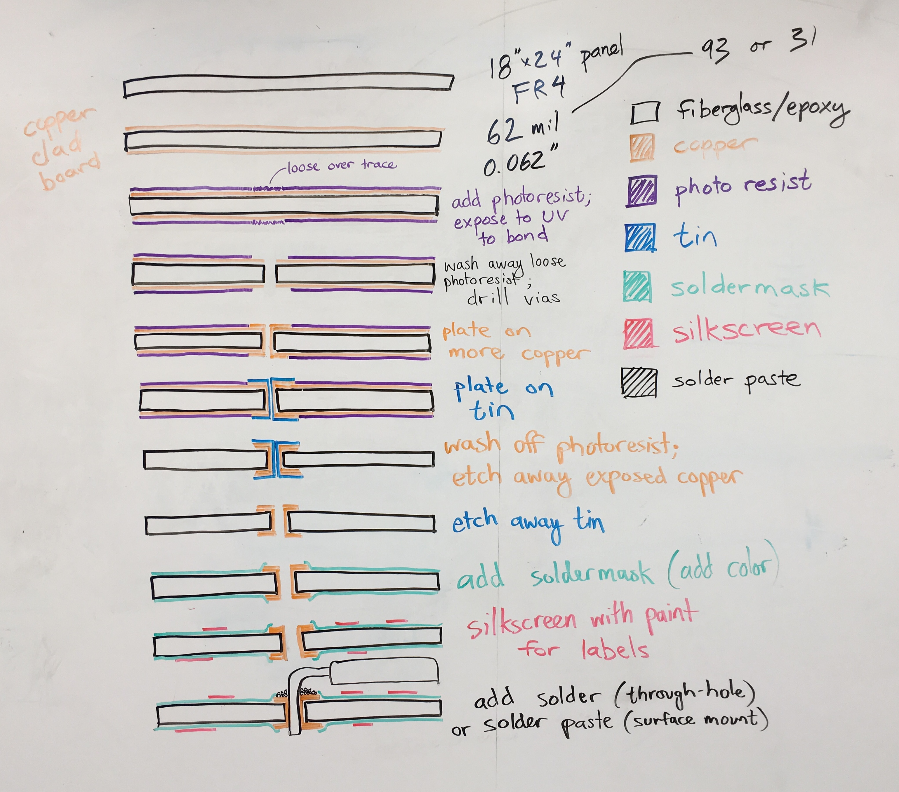

Designing printed circuit boards
PCB manufacturing process

Learning Kicad
Here's a rough summary of how to use Kicad.
- (If you're using a laptop with a trackpad, plug in a real mouse.)
- Make a new project.
- Add components to the schematic file.
- Connect the components together in the schematic.
- Associate a footprint with each component.
- Generate a netlist from the schematic.
- Read the netlist into the PCB file.
- Make a mechanical outline of the PCB on the Edge.Cuts layer.
- Roughly arrange the parts the way you want them.
- Place mechanically critical components.
- Place the rest of the components and route traces between everything.
- Run a design rule check (DRC).
- Repeat cycle: schematic/footprints -> gen. netlist -> read netlist -> tweak layout -> run DRC
- Submit .kicad_pcb file to OSH Park (or possibly generate Gerber files for another manufacturer).
Tutorials